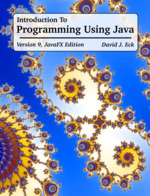
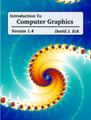
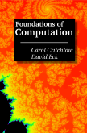
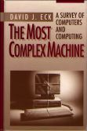
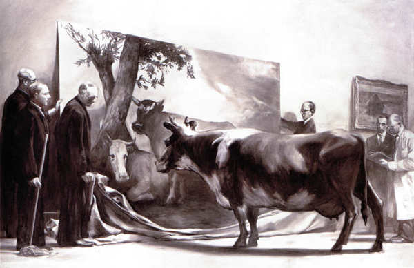

For many years, my official web site has been math.hws.edu/eck
but since I retired, I can't be sure that that site will continue.
This site is a mirror of the most interesting and useful material
from my math.hws.edu site.
Courses That I Taught
(I retired from teaching at the end of 2022.)
Here is a list of courses I have taught, including syllabi from many past terms.
Here is a complete list
of all the Honors projects and Independent Studies
that I supervised over my years at Hobart and William Smith Colleges.
And here are some links to web sites from the most recent versions of some of my courses, including assignments and solutions to those assignments:

Free On-Line Java Text
The first programming course at Hobart and William Smith Colleges covers the Java programming language. Since we started teaching Java in 1996, the textbook for the course has been various versions of a free on-line Java textbook that I wrote for the course. The most recent version, Version 9, was released in May 2022. It requires Java 17 or later, and it comes in two editions, one using JavaFX for GUI programming and one using Swing. The two editions can be found at
JavaFX Edition: https://davidjeck.github.io/javanotes/
Swing Edition: https://davidjeck.github.io/javanotes-swing/
Older versions of the book are also available; see the Preface for links.
The textbook is an introduction to programming and also an introduction to Java directed towards people who do not have any background in programming. You can use it on-line or download a copy for use on your own computer. PDF and print versions are also available. Links can be found at the bottoms of the web pages linked above.

Free Computer Graphics Textbook
An introductory computer graphics textbook, available for use on-line. There are also links on the front page for downloading the web-site version or a PDF version. This book was used in my Computer Graphics course in Fall 2015, Fall 2017, and Fall 2021. Version 1.4 is new in August 2023; it adds a new chapter on WebGPU.
The prerequisite for the book is two semesters of computer programming in Java, C/C++, or JavaScript, including a basic knowledge of data structures, objects, and object-oriented programming. It covers core concepts from 2D graphics in Java, JavaScript, and SVG; 3D graphics with old-fashioned OpenGL 1.1; the three.js JavaScript library for 3D Web graphics; WebGL, the version of OpenGL for the Web; and WebGPU, a newer API for Web graphics. There is an appendix with short introductions to the essential features of Java, C, and JavaScript. See the Preface for more information. The book is available at
https://davidjeck.github.io/graphicsbook
Some Web Apps, written in JavaScript
For many years, I wrote small web applications as Java applets. However, applets are no longer supported in web browsers. A more modern alternative to Java Applets is to write web applications in JavaScript, which is well-supported in all modern browsers. (Note that Java and JavaScript are completely different languages, in spite of the names.) One of my projects for my sabbatical leave in Spring 2016 was to learn JavaScript better and to write some JavaScript Web apps. So far, I have ported some of my examples from Java to JavaScript, and added a few new apps that were written originally in JavaScript. The work that I have done so far is available on this page:
Here are direct links to some of the more interesting examples:
- Genetic Algorithms Demo: Demonstrates the Genetic Algorithm by showing how some simple simulated organisms evolve over a series of generations.
- Mandelbrot Viewer: Explore the famous Mandelbrot set, and make some amazing pictures!
- Pentominos Puzzle Solver: Solves pentominos puzzles, which involve placing twelve pieces of various shapes on a board. Fun to watch.
- Wallpaper Groups: Draw symmetric patterns in the plane, where the symmetry is given by one of the seventeen wallpaper groups.
- xSortLab: Learn about five sorting algorithms and compare their run times.
- xLogicCircuits: Construct simulated logic circuits with AND, OR, and NOT gates.
- Turing Machine Simulation: Create and run simulated Turing machines.
The Mandelbrot set, in particular, is amazing. There is a large collection of images that are visualizations of pieces of that set. Click on any of the small images on that page to load that example into the Mandelbrot Viewer, where you can see a larger version of the image and explore it further.

Free CS Theory Textbook
CPSC 229: Foundations of Computer Science is an introductory course in theoretical computer science. It is a required course in the Computer Science major. For several years, the textbook in this course has been a set of notes written by Professor Carol Critchlow and me. This set of notes is now available for reading on-line or for downloading, at no charge. For more information and links to the PDF version of the book, see:
https://davidjeck.github.io/FoundationsOfComputation
(A printed textbook can be ordered for the cost of reproduction from lulu.com.)

The Most Complex Machine
My introductory computer science textbook, The Most Complex Machine, was published in July, 1995. This book is no longer in print, but I have made a PDF available for free download. Although a lot of it is outdated, most of it is still valid and is still relevant. The book surveys several major areas of computer science, and was meant as a textbook for a first course in computer science or for self-studt. A review of in the April '96 issue of CHOICE magazine says that it is "Strongly recommended as a foundation for guided self-study for gifted high-school students, as well as non-computing majors." You can read more about it here.
I wrote several small programs for use with the book. The original programs were for Macinstosh computers. They were later translated to Java applets, which are unfortunately no longer usable. More recently, I have translated all of the programs in to web apps, which are still useful on their own. See xSortLab, xTuringMachine, xLogicCircuits, xComputer, xModels, xTurtle, and xDataReps.
"The Innocent Eye Test" by Mark Tansey (1981)
